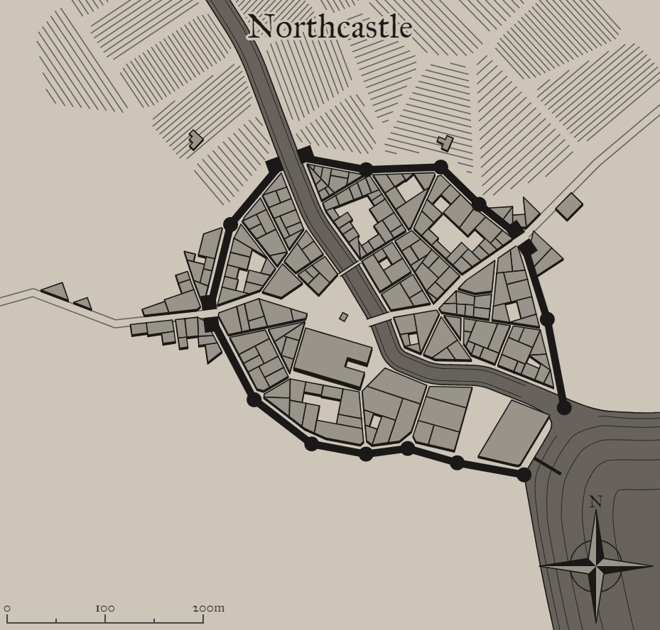

Northcastle
A mystical settlement in a fantastical world

Background
Add background flavor.
1
Settlement Features
Northcastle is a large town 2,001-5,000 located in the plateau region of the areas greater temperate rain forest. The settlement seems to be relatively young. Northcastle and the local surroundings are under the control of an overlord.
Demographics
- Name: Northcastle
- Real population: 4020
- Population: Large Town 2,001-5,000
- Number by race: Human 40%, Dwarf 10%, Elf 10%, Gnome 10%, Halfling 10%, Half-elf 15%, Half-orc 5%,
- Wealth: 5
- Age: 5
- Alignment: 6
- Government Type: An Overlord - The community’s ruler is a single individual who was appointed control and command of the settlement.
- Settlement Trait: Pious
- Number Of Wards: 12
- Number of Districts: 3
Industry and Economy
- Primary Raw Materials: Farming
- Shops of Note: Jeweler: Goldsmiths, Grain Mill, Investigator, Baker.
- Number Of Inns/Taverns: 2
- Inns/Taverns of Note: The Cowherd, The Shallow Forester and One-eyed Grub Pub, The Screeching Golem.
Districts
Citrine Woods
Get desc
Upper Skugailt
Get desc
Newup Row
Get desc
Taverns / Inns
The Cowherd
Location
Upper Skugailt
Description
It's as disgusting inside as it is on the outside. Rounded, wooden beams support the upper floor and the lanterns attached to them. The walls are covered in photographs of what were undoubtedly better times for this tavern. They're now more of a painful reminder of what it has turned into.
Innkeeper
Bob
Menu
- Kito's Spiced Potatos (7 cp)
- Mutton, Lettuce and Tomato (5 sp)
- Blood pudding, Curds, Chicken eggs, Strawberries, Oatmeal (1 sp).
- Roasted Cabbage, Mug of Stout (4 cp)
- Veal sweetbreads, Sharp cheese, Leeks, Peach (2 gp).
The Shallow Forester and One-eyed Grub Pub
Location
Newup Row
Description
The tavern itself is packed. Tourists seem to be the primary clientele here, which often leads to exciting evenings. Several long tables are occupied by, what looks like couples, lone travellers and anybody else who enjoys great company. The other, smaller tables are also occupied by people who are singing and dancing, occassionaly pulling an unsuspecting waitress amidst their dancing group. Even most of the stools at the bar are occupied, though nobody seems to mind more company.
Innkeeper
Bob
Menu
- Apple Stuffed Mushrooms (8 cp)
- Soft cheese, Pomegranite, Corn pone (8 sp).
- Stuffed Mushrooms with Thyme and Creamcheese (4 sp)
- Stewed Onions, Mug of Cider (5 cp)
- Kito's Spiced Potatos (7 cp)
The Screeching Golem
Location
Upper Skugailt
Description
You did hear rumors about this tavern, supposedly it's infamous for something, but for the life of you you can't remember what for. Though juding by everything in this place, it must be something horrifying.
Innkeeper
Bob
Menu
- Pork liver, Seaweed, Succotash, Rice, Fruitcake (2 sp).
- Blood pudding, Curds, Chicken eggs, Strawberries, Oatmeal (1 sp).
- Roasted Cabbage, Mug of Stout (4 cp)
- Stewed Lentils, Mug of Perry (4 cp)
- Stewed Eel and Turnip, Tankard of Cider (8 cp)
2